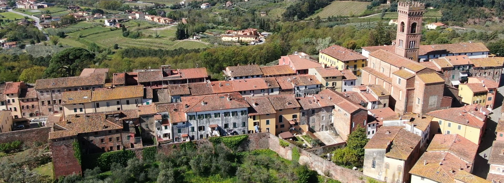

VILLAGES
castelnuovo di garfagnana

Castelnuovo di Garfagnana, nestled in the picturesque region of Garfagnana, offers a rare blend of natural beauty and historical heritage. At the town's center stands the Castello di Castelnuovo, a medieval fortress that dominates the city and provides stunning views of the surrounding Apuan Alps.
Piazza Umberto I is the bustling heart of the town, surrounded by historic buildings, including the majestic Duomo di San Pietro with its Gothic façade. Another captivating site to explore is the Rocca Ariostesca, a fortress dating back to the 12th century, enclosing part of the medieval walls.
Castelnuovo di Garfagnana is immersed in breathtaking scenery, and a stroll across the Ponte della Maddalena, also known as the Devil's Bridge, offers panoramic views of the Serchio River. The surrounding area provides opportunities to explore nature through hikes in the surrounding mountains.
With its authentic atmosphere and historical treasures, Castelnuovo di Garfagnana is a charming destination for those seeking a tranquil escape amidst the beauty of Tuscany.
Wikipedia Castelnuovo di Garfagnana Best parking for visiting Castelnuovo di GarfagnanaDistances : 1h 6 min - 64,6 km
san miniato

San Miniato, a picturesque town in Italy, offers a captivating blend of history, culture, and landscapes. At the heart of this locale stands the majestic Rocca di Federico II, a medieval fortress that dominates the town and provides panoramic views of the surrounding countryside.
The Cathedral of San Miniato is a masterpiece of Romanesque art, with its imposing façade and frescoes adorning the interior. The main square, Piazza della Repubblica, is surrounded by historical buildings, including the Town Hall and the Matilde Tower, adding a touch of historical charm to the city center.
San Miniato is renowned for its gastronomic tradition, particularly the exquisite white truffle. Besides exploring the ancient village, visitors can immerse themselves in the surrounding countryside and participate in truffle-hunting excursions to discover this culinary treasure.
With its welcoming atmosphere and rich history, San Miniato provides an authentic experience for both art enthusiasts and food aficionados, making it a must-visit destination in the Tuscan region.
Wikipedia San Miniato Best parking for visiting San MiniatoDistances : 32 min - 24,6 km
MONTECARLO
Montecarlo, a picturesque town in Italy, enchants visitors with its charming character and breathtaking views. The central nucleus is dominated by the Montecarlo Castle, a medieval fortress offering panoramic vistas of the surrounding countryside.
Narrow cobblestone streets lead to the evocative Piazza del Castello, where the distinctive Church of San Piero in Campo is located, dating back to the 13th century and adorned with frescoes and artworks. The village preserves an authentic atmosphere, featuring historical buildings and welcoming cafes.
Montecarlo is renowned for producing fine wines, and a visit to the local wineries provides an opportunity to savor wines from the region. The surrounding vineyards contribute to the rural charm of this locale, offering an authentic experience in the heart of Tuscany.
With its blend of history, culture, and natural beauty, Montecarlo emerges as a delightful destination for those seeking a tranquil and authentic escape in Italy.
Distances : 9 min - 6,8 km